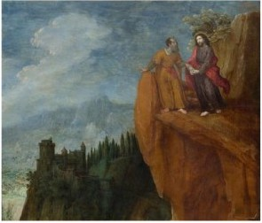

Pure invention. Satan appears in Job as a member of the heavenly court, and as opposing counsel in 1 Chron 21:1, Ps 109:6, Zech 3:1-2. The explanation of evil in the world had evolved from early Zionist Triumphalism: the people of Israel were beneficiaries of the covenant and a descendant of David would always be on the throne to Deuteronomism: the belief the Israel was being punished with the Babylonian Captivity for impiety of some sort to Apocalypticism: a belief based in Zoroastrian dualism that we live in an age dominated by evil, and the architect of that evil is Satan. This idea became dominant during the Hellenistic period, when it became evident that no matter how good the people were, the foreign domination continued.

Mt 4:1 Then was Jesus led up of the spirit into the wilderness to be tempted of the devil. 4:2 And when he had fasted forty days and forty nights, he was afterward an hungred. 4:3 And when the tempter came to him, he said, If thou be the Son of God, command that these stones be made bread. 4:4 But he answered and said, It is written,
Man shall not live by bread alone, but by every word that proceedeth out of the mouth of God. Deu 8:3
4:5 Then the devil taketh him up into the holy city, and setteth him on a pinnacle of the temple, 4:6 And saith unto him, If thou be the Son of God, cast thyself down: for it is written,
He shall give his angels charge concerning thee: and in their hands they shall bear thee up, lest at any time thou dash thy foot against a stone. Ps 111:11
4:7 Jesus said unto him, It is written again,
Thou shalt not tempt the Lord thy God. Deu 6:16
4:8 Again, the devil taketh him up into an exceeding high mountain, and sheweth him all the kingdoms of the world, and the glory of them; 4:9 And saith unto him, All these things will I give thee, if thou wilt fall down and worship me. 4:10 Then saith Jesus unto him, Get thee hence, Satan: for it is written,
Thou shalt worship the Lord thy God, and him only shalt thou serve. Deu 6:13
4:11 Then the devil leaveth him, and, behold, angels came and ministered unto him.
~~~~~~~